calamares-install fail
exit 5
check 8 (systemcheck) FAILED:
command: systemcheck --cli --ci
exit: 1
output:
/usr/libexec/systemcheck/preparation.bsh: line 48: /usr/bin/jq: Permission denied
/usr/libexec/systemcheck/preparation.bsh: line 48: /usr/bin/jq: Permission denied
[INFO] [systemcheck] Connected to Tor.
[INFO] [systemcheck] Kicksecure[1] is a research project.
Links:
[1] https://www.kicksecure.com
[INFO] [systemcheck] user-sysmaint-split installation check[1]: Installed
Links:
[1] https://www.kicksecure.com/wiki/sysmaint
[INFO] [systemcheck] user-sysmaint-split session detection result: USER Session.
[INFO] [systemcheck] Kicksecure Login[1] Security Check (Colors[2])
:
+----------+--------------------------------------+
| Users | Password GUI Autologin |
+----------+--------------------------------------+
| root | Locked (Present) Disabled |
| user | Absent Enabled |
| sysmaint | Absent Enabled |
+----------+--------------------------------------+
You can adjust these settings using "Manage Passwords" and "Manage GUI Autologin"
in the System Maintenance Panel.
See also: Physical Security[3].
Links:
[1] https://www.kicksecure.com/wiki/Login
[2] https://www.kicksecure.com/wiki/Systemcheck#Login_Security_Check_-_Meaning_of_Colors
[3] https://www.kicksecure.com/wiki/Systemcheck#Physical_Security_Check
[INFO] [systemcheck] Kicksecure APT Repository: Enabled.
When the Kicksecure team releases TRIXIE updates,
they will be AUTOMATICALLY installed (when you run apt-get dist-upgrade)
along with updated packages from the Debian team. Please read https://www.kicksecure.com/wiki/Trust to understand the risk.
If you want to change this, use:
sudo repository-dist
[INFO] [systemcheck] Debian Package Update Check: Checking for software updates via apt-get... ( Documentation: https://www.kicksecure.com/wiki/Update )
[WARNING] [systemcheck] Debian Package Update[1] Check Result: Could not check for software updates! (apt-get code: 143)
Please manually check:
Reboot into PERSISTENT Mode | SYSMAINT Session | system maintenance tasks, click "Open Terminal" in the System Maintenance Panel, and run:
upgrade-nonroot
Links:
[1] https://www.kicksecure.com/wiki/Update
[INFO] [systemcheck] Please donate!
See: https://www.kicksecure.com/wiki/Donate
fail vm-defined

fail firmware-logo
fail firmware-state (live / pre-install)

fail live-grub-menu (live / pre-install)

fail live-grub-entry-selected (live / pre-install)

fail live-kernel-boot (live / pre-install)

fail live-desktop-ready (live / pre-install)
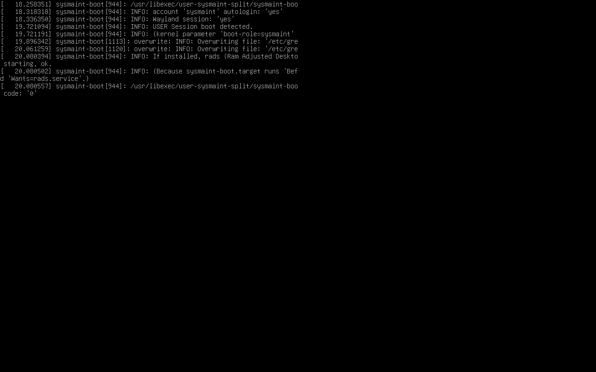
fail live-guestcontrol-ready (live / pre-install)
fail install-host-launched (live / pre-install)

fail welcome (live / pre-install)

fail location
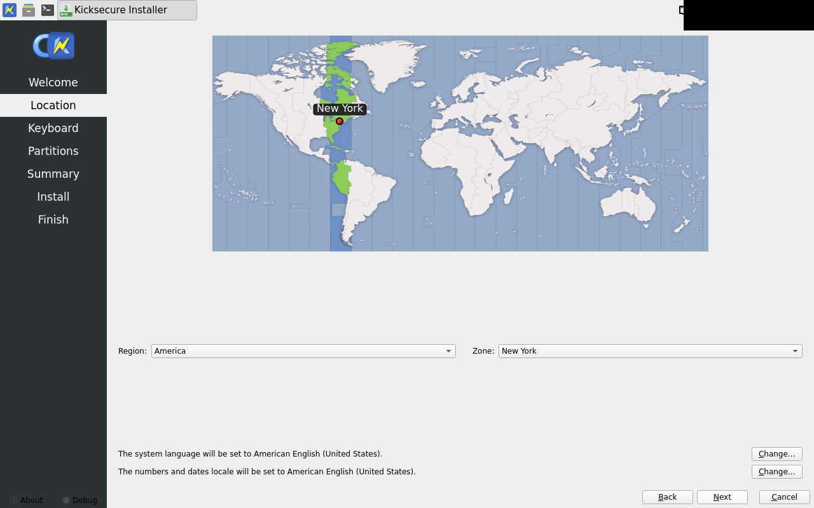
fail keyboard
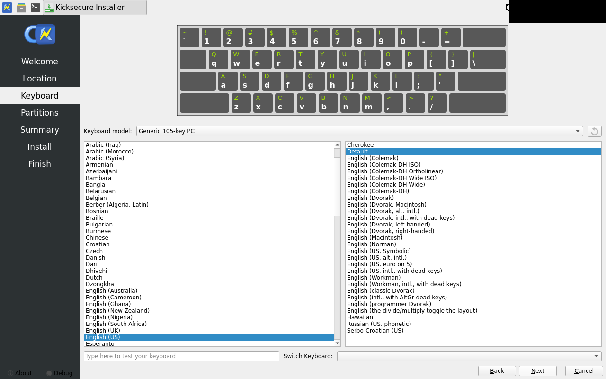
fail partitions (live / pre-install)

fail partitions-luks-filled (live / pre-install)
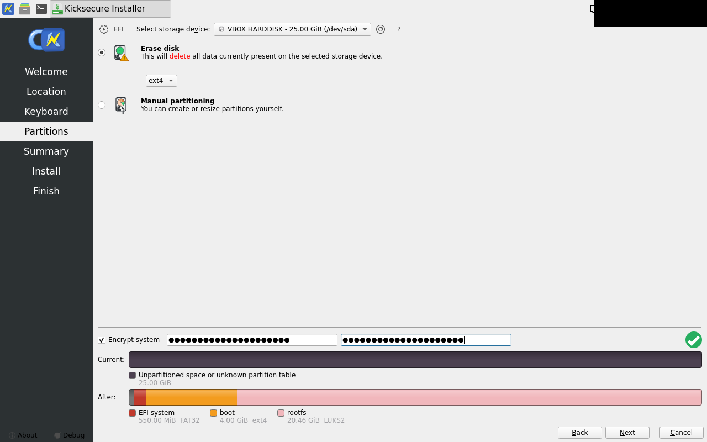
fail summary
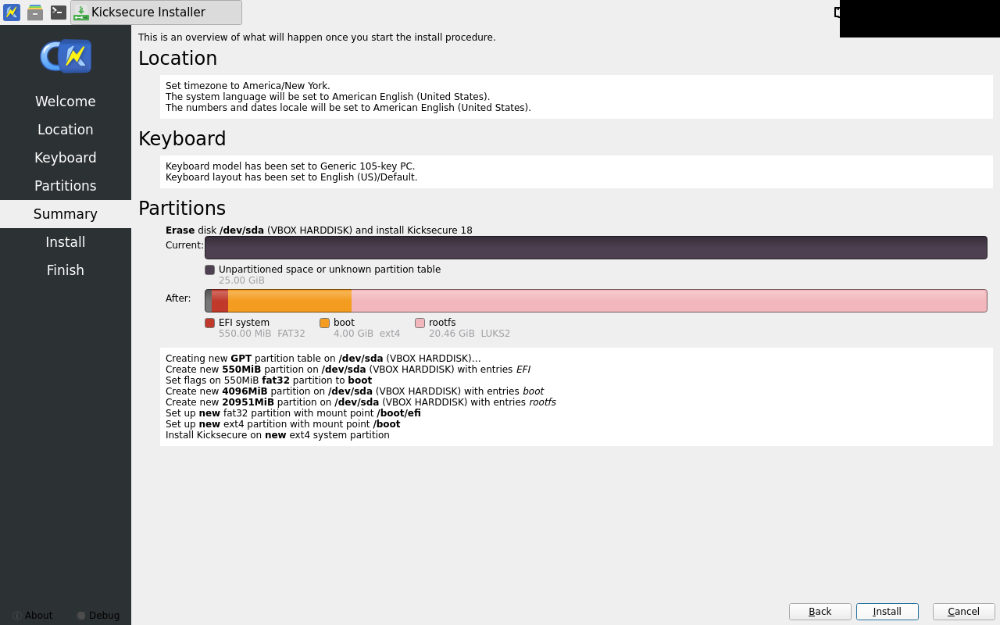
fail install-started (live / pre-install)
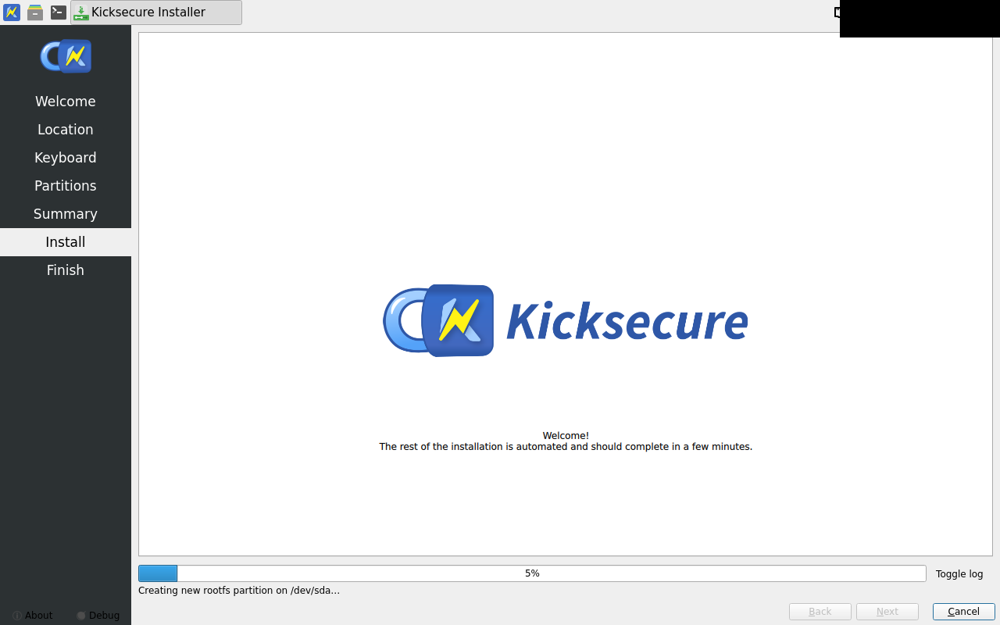
fail install-done (live / pre-install)
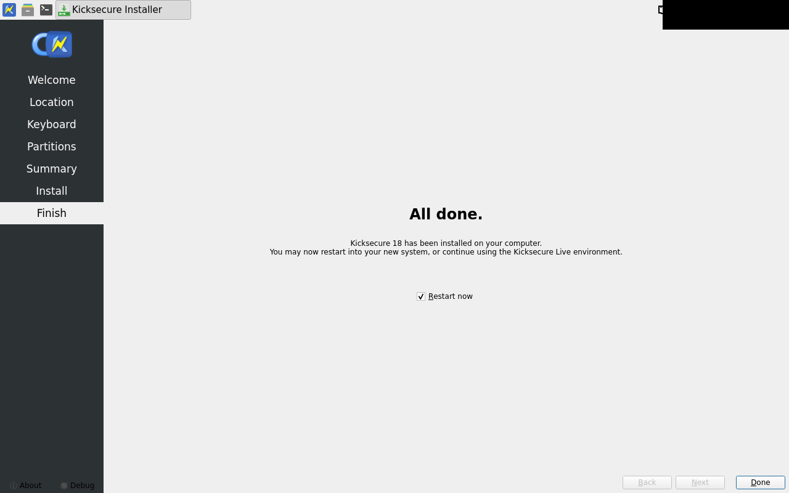
fail vm-stopped-iso-detached

fail installed-firmware-logo (installed system / first boot)

fail installed-grub-menu (installed system / first boot)

fail luks-prompt (boot / LUKS unlock)
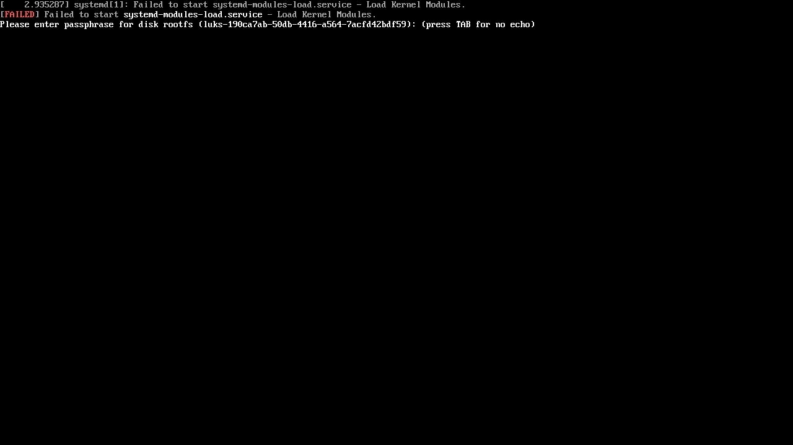
fail luks-passphrase-typed (boot / LUKS unlock)
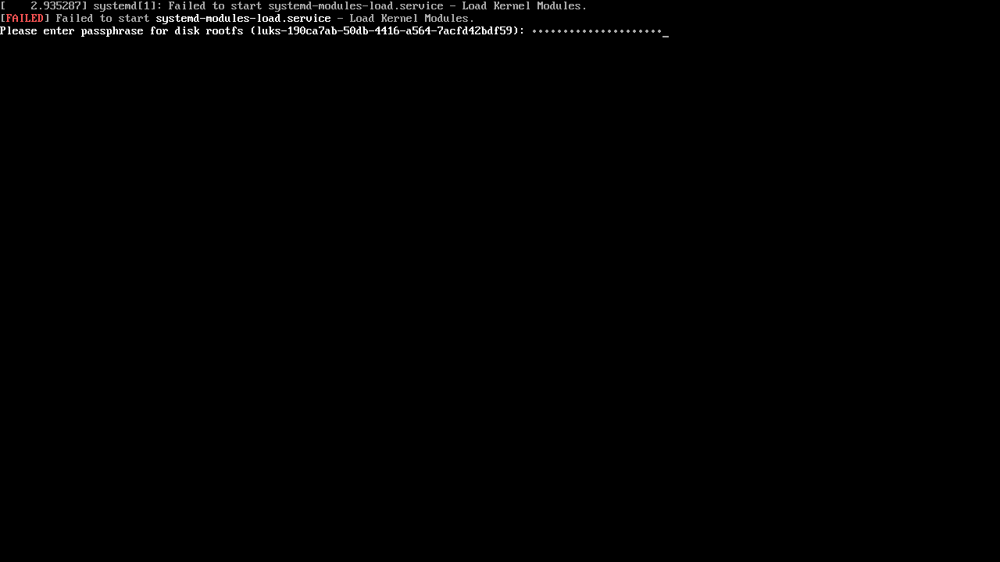
fail luks-unlocked (boot / LUKS unlock)
fail first-boot (installed system / first boot)

fail mok-cert-enrolled (installed system / MOK enrollment)

fail mok-reboot-desktop (installed system / first boot)
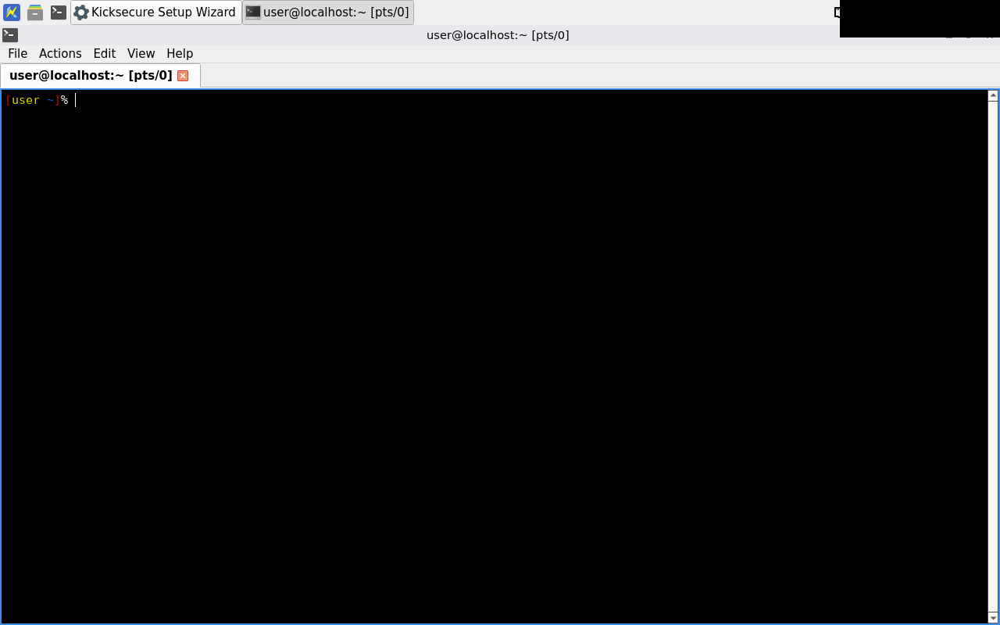
fail terminal-open
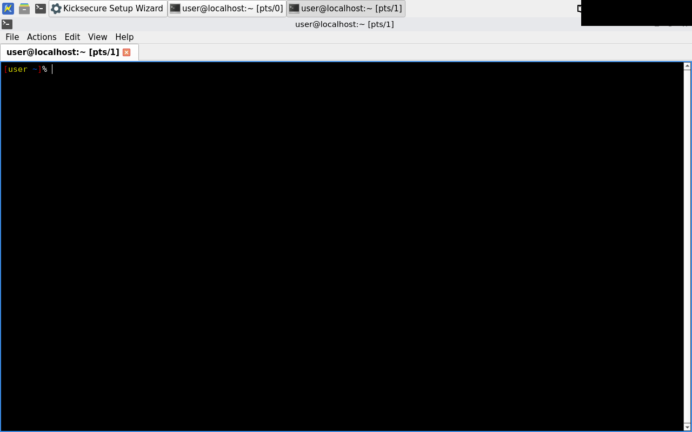
fail check-6-gui-rendered (post-boot checks)
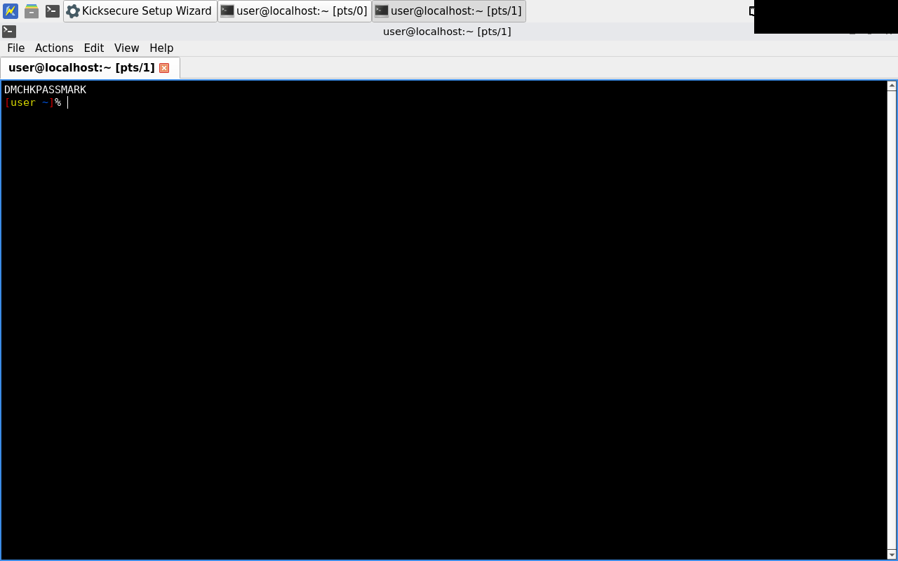
fail sysmaint-luks-prompt (installed system / sysmaint boot)
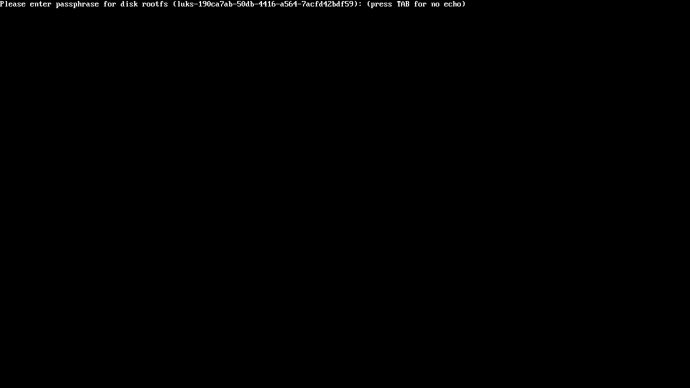
fail sysmaint-terminal (installed system / sysmaint boot)
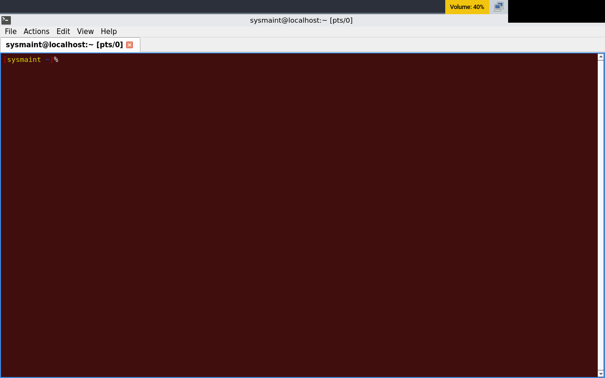
fail failure-vm-state

fail failure
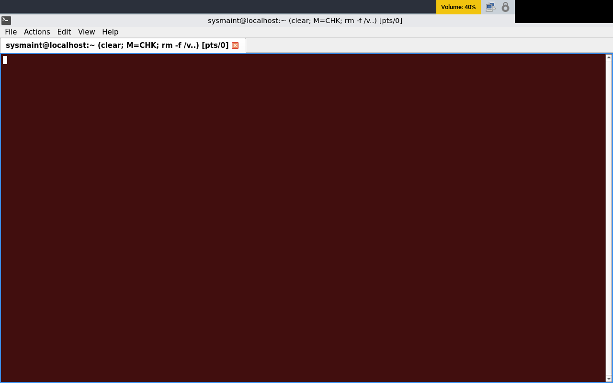